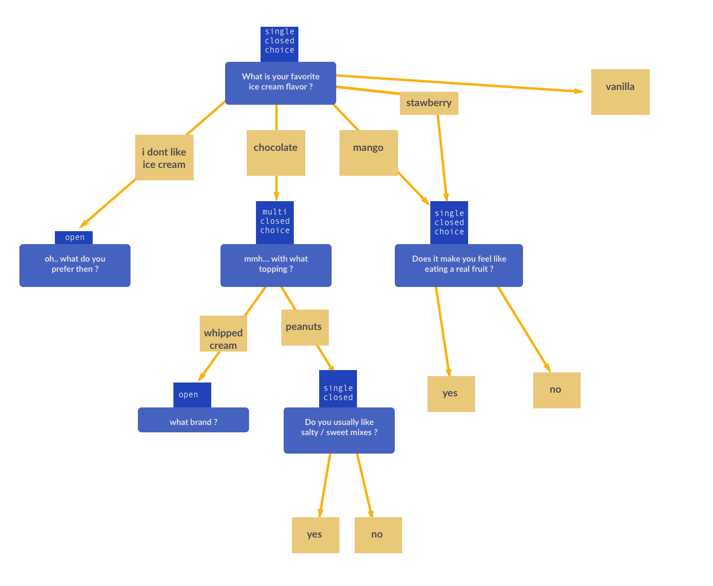
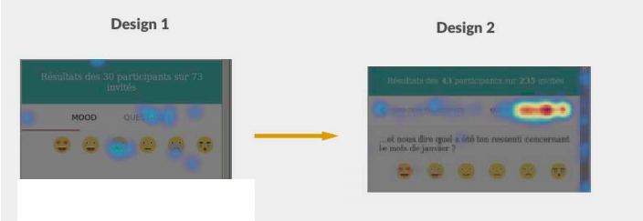
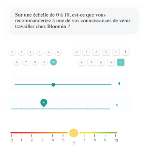

Chaque semaine, une courte enquête invite les collaborateurs à s'exprimer sur leur vie en entreprise, les résultats étant affichés de manière anonymisée à la fin du questionnaire. Je me suis chargé de réorganiser cette section d'affichage des résultats, sous de nouvelles contraintes techniques et ergonomiques :
Une plus grande complexité dans la structure des enquêtes (questions imbriquées, etc.)
Une augmentation significative du nombre de participants (passer de 10-50 à 500-1000 répondants sur certaines enquêtes)
Corriger certains points de friction et soucis d'usabilité identifiés lors de tests utilisateurs
Gérer les nouvelles structures d'enquête
Une évolution technique récente avait permis aux managers de créer des enquêtes aux structures variées et complexes. L'affichage des résultats devait alors aussi s'adapter, autour de 3 problématiques principales :
Architecture de l'information — la nouvelle possibilité d'imbriquer des questions, en cascade et sans limitation, a réclamé un travail préalable d'organisation et d'algorithmique pour traiter et afficher les réponses obtenues
Affichage cohérent — que l'enquête ait une structure simple ou complexe, l'affichage des réponses devait répondre aux mêmes besoins de clarté, simplicité et usabilité.
Privilégier les usages réels — d'après notre recherche utilisateur, nous savions que 95% des enquêtes étaient d'une complexité moyenne, c'est à dire constituée d'une question "mood" principale (question fermée sur l'humeur générale), suivie de 3 ou 4 autres questions avec maximum un niveau d'imbrication. C'est donc ce niveau de complexité que nous avons priorisé dans l'affichage des résultats, les cas plus complexes étant marginaux.
Exemple d'enquête complexe comportant plusieurs types de questions et plusieurs niveaux d'imbrication.
Notre solution : afficher chaque question dans un onglet, autour d'un graphique central suivie d'une section contenant le détail des réponses et les questions imbriquées. Pour le cas marginal des enquêtes plus complexes (plusieurs niveaux d'imbrication de questions), chaque question apparaît dans un nouvel onglet à part — ce qui peut générer un grand nombre d'onglets dans les cas extrêmes, mais permet en contrepartie de conserver une bonne clarté générale.
Dans une volonté de transparence des réponses aux questions ouvertes, charge à nous de ne pas surcharger l'interface avec trop d'informations d'un seul coup (dans les cas avec 100+ répondants). Quelques solutions retenues :
Affichage progressif — Seules les 10 premières réponses sont affichées au chargement. C'est à l'utilisateur s'il le souhaite, de charger les réponses suivantes par blocs de 10.
Hiérarchiser les réponses par un système de tri et de filtres (chronologique, antichronologique) — Une autre possibilité à l'étude était celle de trier les réponsais par pertinence, c'est à dire en fonction du nombre de "likes" obetnus auprès des autres employés.
Il a été décidé de ne pas offrir un affichage des résultats trop détaillé, afin de préserver l'anonymat des réponses. L'analyse plus poussée des résultats étant réserveé à l'inteface des managers.
Une interface claire et engageante
Pour que les utilisateurs répondent et s'investissent dans les enquêtes Bloomin, je me suis basé sur le modèle comportemental "Hook", qui lie l'engagement à un cycle de 4 étapes : Stimulus ("trigger"), Action, Récompense ("reward"), et Investissement.
Stimulus — inciter l'utilisateur à ouvrir la section "Affichage des résultats" après avoir répondu au questionnaire.
Pour cela, nous avons ajouté à bouton ("call to action") directement après la dernière question de l'enquête.
En précisant le nombre de réponses déjà disponibles, nous piquons davantage la curiosité de l'utilisateur
Action — faciliter l'interaction de l'utilisateur avec la section d'affichage des résultats. Pour cela, plusieurs moyens ont été déployés :

Corriger les soucis d'usabilité identifiés par le tracking utilisateur (hotjar.js. Par exemple sur l'image ci-conte, on observe sur le design 1 que les utilisateurs ne comprenaient pas les boutons de navigation entre question. Sur le design 2, en ajoutant du texte sur les boutons de navigation, les utilisateurs y cliquent beaucoup plus.
De nombreuses micro-interactions, avec une large variété d'actions à effectuer (toucher/cliquer, scroll vertical, swipe horizontal, etc.) ainsi que de réactions de l'interface (filtres, menus déroulants).
Récompense — récompenser les actions de l'utilisateur, sur deux aspects :
Le contenu (le fond) — délivrer un véritable contenu, intéressant et pertinent ; dans notre cas des statistiques et des verbatims des réponses.
L'interface en elle-même (la forme), élégante, agréable et attrayante. Pour cela, nous avons soigné notre design system (à partir d'une base Angular Material), et proposé une riche variété dans l'affichage des questions : diagramme en camembert pour les questions fermées, en barre pour celles à choix multiple, verbatims sous forme de bulles de chat pour les questions ouvertes, etc.
Recherches design pour la composante "réponse entre 1 et 10"
Investissement — impliquer l'utilisateur dans l'outil, afin de l'inciter à y revenir pour la prochaine enquête. Pour cela, l'interface invite l'utilisateur à découvrir trois axes d'exploration :
horizontal : on passe d'une question à une autre, en voyant la tendance générale via un graphique
vertical : on explore le détail des réponses à une question donnée en lisant les verbatims, etc.
en profondeur : détail des chiffres au survol, déroulement des menus accordéon
Déroulement
Cette évolution du produit s'est déroulée en plusieurs étapes : recherche utilisateur / benchmarking, co-conception, prototypages et tests utilisateurs, et suivi du développement. Les résultats ont été très positifs : +50% d'engagement en 6 mois, que ce soit en quantité (nombre de répondants) ou en qualité (qualité et longueur des réponses ouvertes).
{kind=link}
{kind=link}
{kind=link}
{kind=link}
{kind=link}
{kind=link}
{kind=link}
{kind=link}